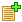

Название
Каталог технических товаров — Упорядоченный список оборудования
О модуле
| Тип | Публичный |
| Можно создать копий | Сколько угодно |
| Присутствует по умолчанию | Нет |
| Можно удалять | Да |
Этот модуль создает на сайте раздел, содержащий набор страниц с описанием оборудования сгруппированных по категориям, как файлы сгруппированы по папкам на диске компьютера. Модуль оперирует двумя объектами - это оборудование и модель. Основной объект это оборудование. В том случае если оборудование имеет несколько разновидностей, отличающихся техническими характеристиками и ценой, то ему присваиваются модели, которые являются модификациями основного объекта оборудование. Это позволяет объединить под одним описанием несколько схожих позиций. Например: категория - материнские платы, объект оборудование - материнские платы NONAME серии TF, который включает в себя несколько моделей - TF1, TF2, TF3 и тд. Объекту оборудование может быть присвоено описание, производитель и список технических характеристик. Технической характеристике присваивается группа, название, единица измерения и значение. Модель также имеет название, описание, изображение и цену. Если оборудование содержит в себе несколько моделей, то список технических характеристик одинаков для всех моделей оборудования, а их значения присваиваются для каждой модели отдельно. Имеется возможность сравнения оборудования по техническим характеристикам. Всё это делает данный модуль идеальным инструментом для создания каталогов любых технических устройств - от компьютерных комплектующих до автомобилей. Есть возможность использования каталога в качестве интернет-магазина.
Общие действия для каталога
- →
Создание новой категории с указанием ее свойств.
- →
Добавление нового оборудования с указанием его свойств.
- →
Добавление нового производителя с указанием его свойств.
- →
Добавление новой группы технических характеристик с указанием её свойств.
- →
Добавление новой технической характеристики с указанием её свойств.
- →
Выбрать ненужное оборудование из текущего каталога и удалить его.
- →
Задание явного порядка сортировки списка оборудования в данной категории. Документы с ненулевым приоритетом помещаются в начало и выстраиваются по его возрастанию, документы с нулевым приоритетом сортируются по полю, указанному в параметрах каталога.
- →
Выводит список всех доступных для каталога технических характеристик, сортированных по группам. Позволяет
 редактировать и
редактировать и удалять группы и технические характеристики.
удалять группы и технические характеристики.- →
Задание явного порядка сортировки списка групп технических характеристик при отображении. Группы с ненулевым приоритетом помещаются в начало и выстраиваются по его возрастанию, группы с нулевым приоритетом сортируются по алфавиту. Позволяет сначала выводить более важные группы характеристик.
- →
Обновить цены из файла.
- → (появляется на странице объекта)
Добавление к данному объекту ссылок на объекты других каталогов.
- →
Редактирование общих параметров каталога.
- →
Редактирование параметров дополнительного меню каталога.
- →
Редактирование параметров меню навигации по производителям.
- →
Задание имен для групп связанных объектов (каталогов, имеющихся на сайте). Благодаря этой функции можно со страницы одного объекта ссылаться на объекты других каталогов. Ссылки на объекты других каталогов будут отображаться под заголовками, задаваемыми этой опцией.
- →
Настроить импорт данных.
- →
Настроить экспорт данных.
Действия над категориями
- Редактировать
Изменение свойств категории.
 Вверх
ВверхПереместить категорию на одну позицию вверх в списке.
 Вниз
ВнизПереместить категорию на одну позицию вниз в списке.
- Удалить
Удалить пустую категорию.
Действия над оборудованием
- Редактировать
Изменить свойства оборудования.
-  Create Model
Добавить новую модель данного оборудования с указанием её свойств.
 Установить тех. характеристики
Установить тех. характеристикиДобавить технические характеристики для данного оборудования из списка с указанием их значений.
- Удалить
Удалить документ.
Параметры каталога
- Сколько уровней каталога отображать за раз
Сколько уровней вложенности категорий каталога отображать на одной странице.
- Вид списка категорий
В одну или в две колонки
- Вид списка оборудования
В одну или в две колонки
- Сортировать
Способ сортировки документов с описанием оборудования, для которых не установлен явный приоритет сортировки. Возможные значения:
- по названию
- по дате публикации.
- Кол-во документов на странице
Количество документов, отображаемых на одной странице.
- Кол-во моделей оборудования в ряду
Количество моделей оборудования, отображаемых в один ряд.
- Показывать описание текущей категории
Показывать или нет описание текущей категории оборудования.
- Показывать информацию о производителе в товарах
Показывать или нет информацию о производителе.
- Функции интернет-магазина
Включено/выключено/только показ цены. При включении этой функции, посетитель сможет добавлять объекты в корзину как в интернет-магазине.
Свойства категории
- Родительская категория
Категория в которую будет помещена данная.
- Название
Название категории.
- Описание
Форматированное описание категории, отображаемое в списке категорий под ее названием.
Свойства оборудования
- Родительские категории
Категории, в которые будет помещено данное оборудование.
- Название
Название оборудования.
- Производитель
Производитель оборудования.
- Код
Код (артикул). Отображается перед названием оборудования.
- Цена
Цена оборудования.
- Анонс
Короткая аннотация к оборудованию, отображаемая в общем списке.
- Описание
Форматированный текст с описанием оборудования.
- Дата публикации
День, когда был опубликован документ.
Свойства производителя
- Название
Название фирмы-производителя
- Страна
Страна фирмы-производителя
- Анонс
Короткая аннотация к производителю, отображаемая в общем списке.
- Описание
Форматированный текст с информацией о производителе.
- Web-сайт
Ссылка на сайт производителя.
Свойства группы технических характеристик
- Название
Название группы технических характеристик. Например габариты, электрические и т.п.
Свойства технической характеристики
- Группа
Группа, к которой отностится техническая характеристика.
- Название
Название технической характеристики. Например длина, мощность и т.п.
- Единица измерения
Единица измерения технической характеристики.
Действия над моделями оборудования
- Редактировать
Изменить свойства модели.
 Установить изображение
Установить изображениеЗагрузить изображение для данной модели.
- Удалить
Удалить модель.
Свойства модели
- Код
Буквенно-цифровое обозначение значение модели оборудования.
- Название
Название модели.
- Цена
Цена.
- Описание
Форматированный текст с информацией о модели.
Опции, доступные при добавлении технических характеристик
- Изменить список тех. характеристик
Привязать нужные технические характеристики ко всем моделям данного оборудования. Технические характеристики выбираются из списка.
- Анонс
Эта опция отображает техническую характеристику при нажатии на ссылку "Показать список моделей".
- <- ->
Объединить ячейки. Если для всех моделей оборудования данная характеристика имеет одинаковые значения, то достаточно указать её для одной модели и выбрать эту опцию.
- Значения
Значения технических характеристик.
Настройка отображения меню навигации по производителям
- Показать навигацию по производителям
Расположение меню на странице.
- Страницы
Страницы сайта, на которых будет отображаться меню.
- Внешний вид навигации
Список всех производителей - отображает в меню список производителей
,Заголовок - показывает только заголовок
.
- Заголовок
Заголовок меню.